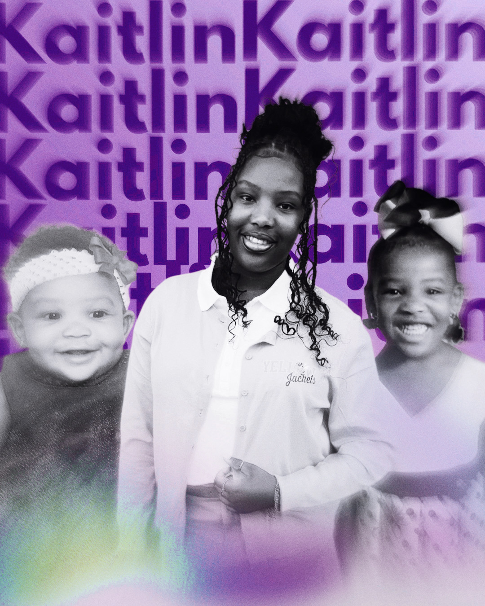

Biography
I am a 11th-grade student at Denham Springs High School. Throughout my high school career, I have developed a strong academic focus, especially in my favorite subjects: History and Chemistry. I enjoy learning about the past and exploring the science of how things work. My hard work in the classroom started early; my proudest achievement so far was being named Student of the Year back in the 8th grade at my previous school. This award showed my commitment to my education and my positive attitude toward learning. Outside of my regular classes, I stay very involved in my school community. I am an active member of both the Beta Club and JADD (Jackets Against Destructive Decisions). Being part of these organizations has taught me the importance of teamwork and helping others. A major highlight of my club involvement was participating in the JADD Prom Fashion Show, which was an exciting event that brought students together to promote safe choices. In my free time, I love being creative by making sports graphic designs. This hobby allows me to combine my artistic side with my interest in athletics. After I graduate from high school, I plan to attend college to study Sports Journalism. I want to use my skills to share stories about athletes and the games I love. I am a motivated student who always strives to do my best, both in my clubs and in my future career.